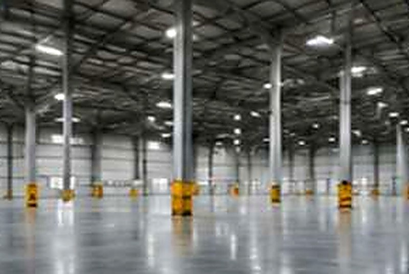
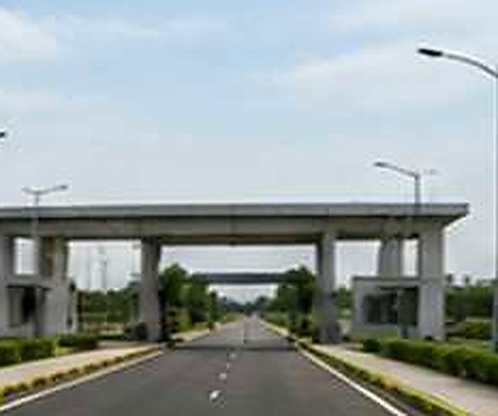

Strong foundations. Smart execution. Infrastructure built to last.
From earthwork and foundations to industrial flooring and external works, we deliver civil infrastructure that supports operations, enhances productivity and creates long-term value.
Quality Assured
Safe Execution
On-Time Delivery
Cost Effective
Experienced Team
Enduring Quality
Scope of work
Civil works, engineered end to end
Earthwork, excavation and engineered backfilling
PCC / RCC foundations, pedestals and plinth beams
RCC buildings, office and utility structures
Industrial flooring and equipment foundations
Internal roads, storm-water drains and paving
Compound walls, gates, security rooms and external works
01
Foundations
PEB, equipment and machine foundations
Strip, isolated, raft and pile foundations
Precision layout and quality concrete works
02
RCC Works
Structural and architectural concrete
Columns, beams, slabs, walls and staircases
High-grade concrete with stringent quality control
03

Flooring
Industrial floors for heavy loads and machinery
Power floated and hard trowel finish
Epoxy and PU flooring, as per requirement
04

External Works
Roads, drainage and site development
Compound walls, gates and security rooms
Paving, curbs, landscaping and utility connections
Our civil execution process
Six stages, one continuous build sequence
01
Planning
Site study, survey & planning
02
Earthwork
Excavation and backfilling
03
Foundations
Formwork, reinforcement, concrete
04
Structural Works
RCC structures, formwork, concrete
05
Finishing & Externals
Flooring, roads, drains, walls
06
Quality & Handover
Inspection, testing, documentation
We build infrastructure that supports operations, enhances productivity and creates long-term value.
Planning a civil works package?
Send us your site data and drawings. We will respond with a constructability review and a clear execution plan.